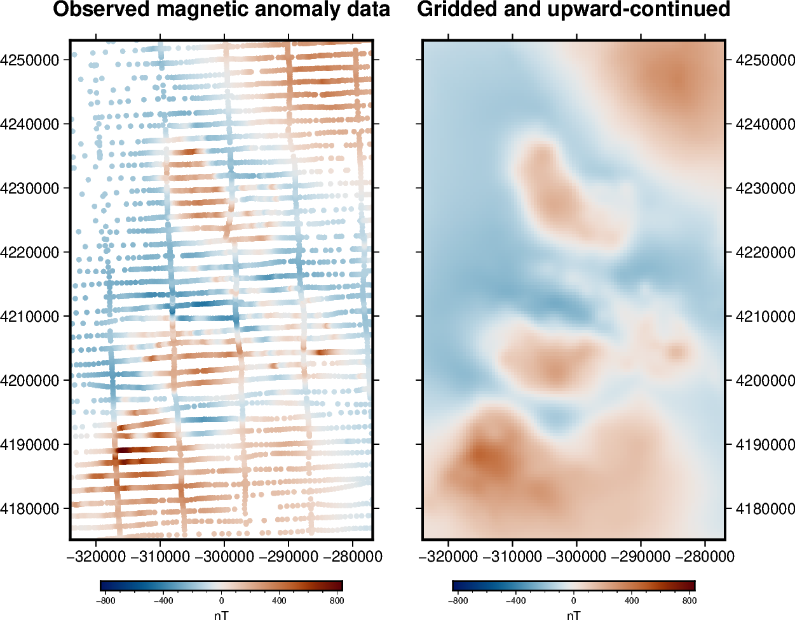

Gridding and upward continuation
Note
Click here to download the full example code
Gridding and upward continuation¶
Most potential field surveys gather data along scattered and uneven flight lines or ground measurements. For a great number of applications we may need to interpolate these data points onto a regular grid at a constant altitude. Upward-continuation is also a routine task for smoothing, noise attenuation, source separation, etc.
Both tasks can be done simultaneously through an equivalent sources
[Dampney1969] (a.k.a equivalent layer). We will use
harmonica.EquivalentSources to estimate the coefficients of a set of
point sources that fit the observed data. The fitted sources can then be used
to predict data values wherever we want, like on a grid at a certain altitude.
By default, the sources for EquivalentSources are placed
one beneath each data point at a relative depth from the elevation of the data
point following [Cooper2000]. This behaviour can be changed throught the
depth_type optional argument.
The advantage of using equivalent sources is that it takes into account the 3D nature of the observations, not just their horizontal positions. It also allows data uncertainty to be taken into account and noise to be suppressed though the least-squares fitting process. The main disadvantage is the increased computational load (both in terms of time and memory).
Out:
Number of data points: 7054
Mean height of observations: 541.8293166997448
R² score: 0.9988789670714452
Generated grid:
<xarray.Dataset>
Dimensions: (northing: 1, easting: 1)
Coordinates:
* easting (easting) float64 -5.5
* northing (northing) float64 57.8
upward (northing, easting) float64 1.5e+03
Data variables:
magnetic_anomaly (northing, easting) float64 -0.04759
Attributes:
metadata: Generated by EquivalentSources(damping=1, depth=1000)
/usr/share/miniconda3/envs/test/lib/python3.9/site-packages/xarray/plot/plot.py:1484: UserWarning: Attempting to set identical left == right == -5.5 results in singular transformations; automatically expanding.
ax.set_xlim(x[0], x[-1])
/usr/share/miniconda3/envs/test/lib/python3.9/site-packages/xarray/plot/plot.py:1485: UserWarning: Attempting to set identical bottom == top == 57.8 results in singular transformations; automatically expanding.
ax.set_ylim(y[0], y[-1])
import matplotlib.pyplot as plt
import pyproj
import verde as vd
import harmonica as hm
# Fetch the sample total-field magnetic anomaly data from Great Britain
data = hm.datasets.fetch_britain_magnetic()
# Slice a smaller portion of the survey data to speed-up calculations for this
# example
region = [-5.5, -4.7, 57.8, 58.5]
inside = vd.inside((data.longitude, data.latitude), region)
data = data[inside]
print("Number of data points:", data.shape[0])
print("Mean height of observations:", data.altitude_m.mean())
# Since this is a small area, we'll project our data and use Cartesian
# coordinates
projection = pyproj.Proj(proj="merc", lat_ts=data.latitude.mean())
easting, northing = projection(data.longitude.values, data.latitude.values)
coordinates = (easting, northing, data.altitude_m)
# Create the equivalent sources.
# We'll use the default point source configuration at a relative depth beneath
# each observation point.
# The damping parameter helps smooth the predicted data and ensure stability.
eqs = hm.EquivalentSources(depth=1000, damping=1)
# Fit the sources coefficients to the observed magnetic anomaly.
eqs.fit(coordinates, data.total_field_anomaly_nt)
# Evaluate the data fit by calculating an R² score against the observed data.
# This is a measure of how well the sources fit the data, NOT how good the
# interpolation will be.
print("R² score:", eqs.score(coordinates, data.total_field_anomaly_nt))
# Interpolate data on a regular grid with 500 m spacing. The interpolation
# requires the height of the grid points (upward coordinate). By passing in
# 1500 m, we're effectively upward-continuing the data (mean flight height is
# 500 m).
grid_coords = vd.grid_coordinates(region=region, spacing=500, extra_coords=1500)
grid = eqs.grid(coordinates=grid_coords, data_names=["magnetic_anomaly"])
# The grid is a xarray.Dataset with values, coordinates, and metadata
print("\nGenerated grid:\n", grid)
# Plot original magnetic anomaly and the gridded and upward-continued version
fig, (ax1, ax2) = plt.subplots(nrows=1, ncols=2, figsize=(12, 9), sharey=True)
# Get the maximum absolute value between the original and gridded data so we
# can use the same color scale for both plots and have 0 centered at the white
# color.
maxabs = vd.maxabs(data.total_field_anomaly_nt, grid.magnetic_anomaly.values)
ax1.set_title("Observed magnetic anomaly data")
tmp = ax1.scatter(
easting,
northing,
c=data.total_field_anomaly_nt,
s=20,
vmin=-maxabs,
vmax=maxabs,
cmap="seismic",
)
plt.colorbar(tmp, ax=ax1, label="nT", pad=0.05, aspect=40, orientation="horizontal")
ax1.set_xlim(easting.min(), easting.max())
ax1.set_ylim(northing.min(), northing.max())
ax2.set_title("Gridded and upward-continued")
tmp = grid.magnetic_anomaly.plot.pcolormesh(
ax=ax2,
add_colorbar=False,
add_labels=False,
vmin=-maxabs,
vmax=maxabs,
cmap="seismic",
)
plt.colorbar(tmp, ax=ax2, label="nT", pad=0.05, aspect=40, orientation="horizontal")
ax2.set_xlim(easting.min(), easting.max())
ax2.set_ylim(northing.min(), northing.max())
plt.show()
Total running time of the script: ( 0 minutes 7.263 seconds)